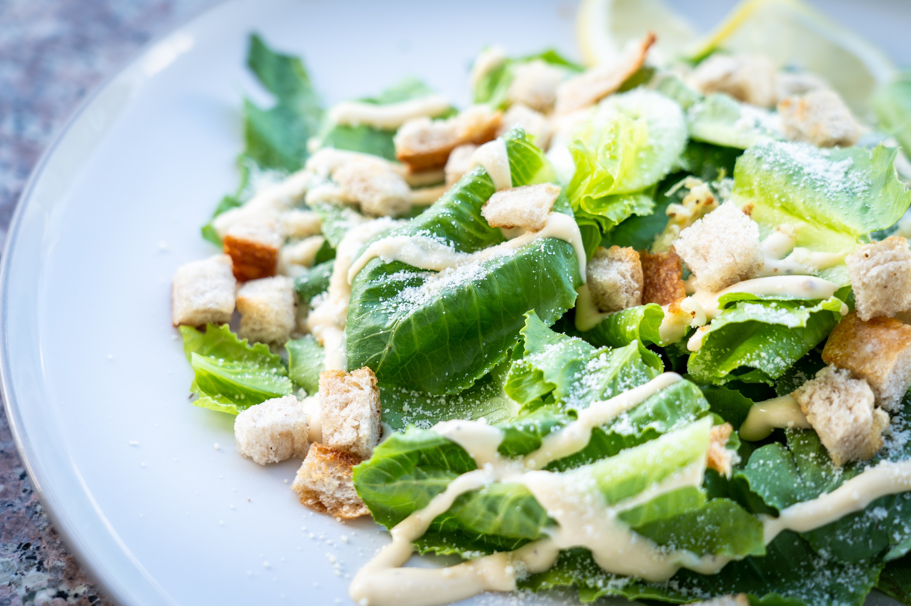

Caesar Salad

Classic Caesar Salad with crisp homemade croutons and a light caesar dressing for when you want to impress your
dinner guests.
Recipe Author: Natasha of NatashasKitchen.com
Ingredients
For the Croutons:
- 0.5 French Baguette, cut in half and thinly sliced (1/4" thick)
- 3 Tbsp extra virgin olive oil
- 1 tsp minced garlic, 2 small cloves
- 2 Tbsp grated parmesan cheese
Caesar Salad dressing:
- 2 small garlic cloves, minced (1 tsp)
- 2 tsp dijon mustard
- 2 tsp fresh lemon juice
- 1.5 tsp red wine vinegar
- 72 ml extra virgin olive oil
- 1 tsp Worcestershire sauce
- 0.5 tsp sea salt, or to taste
- 0.13 tsp black pepper, plus more to serve
For the Caesar Salad:
- 1 large romaine lettuce, (or 2 small heads romaine)
- 33.33 g parmesan cheese, shredded or shaved